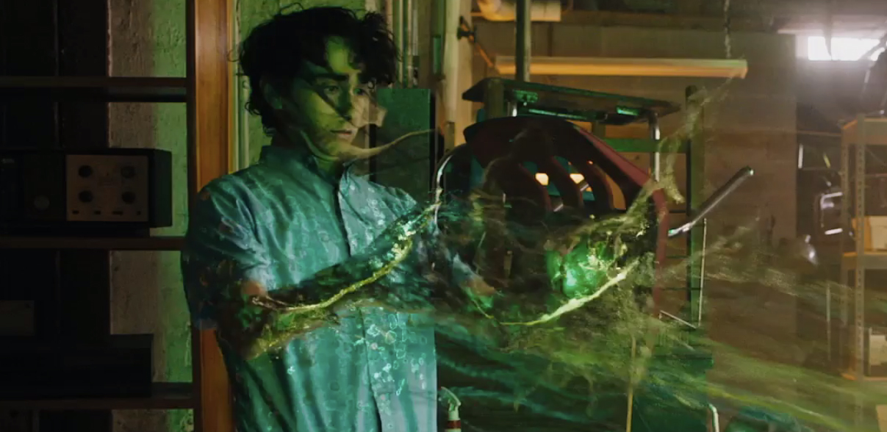
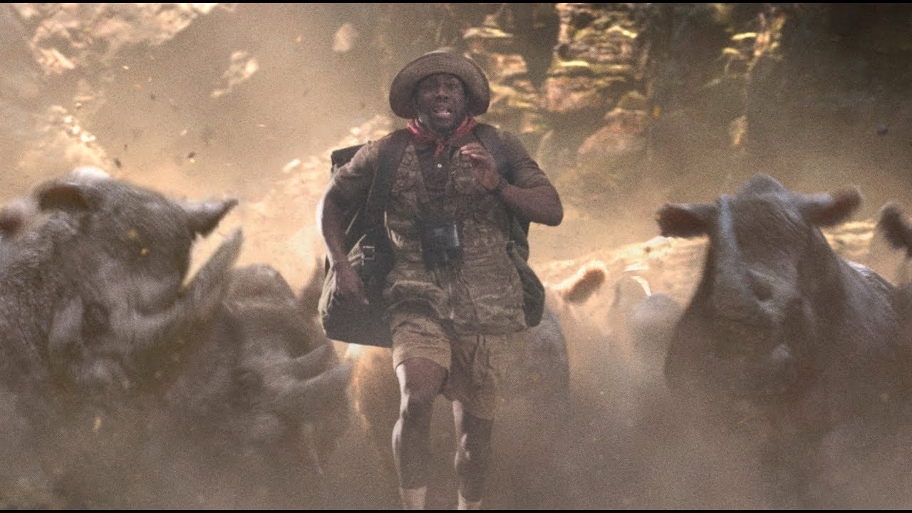
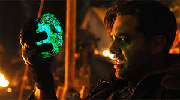

| In this scene, the four children in detention find a video game console with a game called Jumanji. They put the game chip in the console and begin the game. They choose a character to play and press 'Start.' Then, the console generates a green mist-like substance which advances towards them and then starts to dissolve them. They are being transported into the world of Jumanji to survive! | Journey to Jumanji |  |
|---|---|---|
|  | Kevin Hart being chased by rhinos | A hillarious scene where Kevin Hart is trapped in a valley, where he is encountered by a stampede of rhinos. To escape, he has to sprnt as fast as he can untill the rest of his friends are able to pull him up from their helicopter. |
| Russel Van Pelt, the antagonist gains possesion of a sacred stone which grants him control over all of Jumanji's animals. The four children are tasked to steal the jewel and return it on the Jaguar statue to return Jumanji back to normal and bring them back to their real selves. | Villain |  |